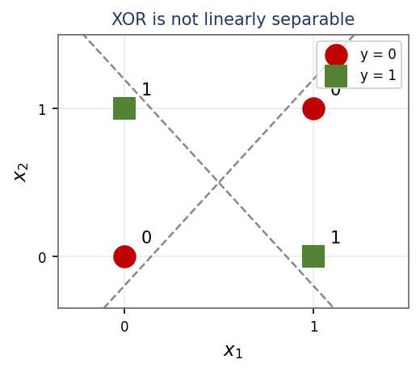
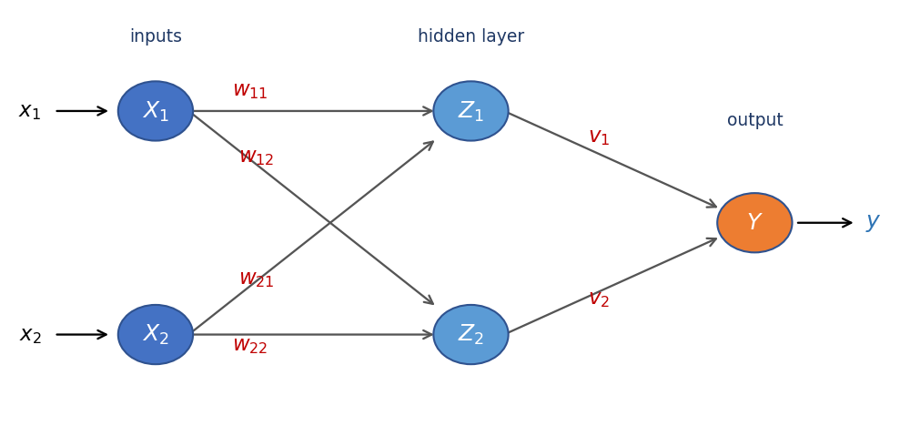
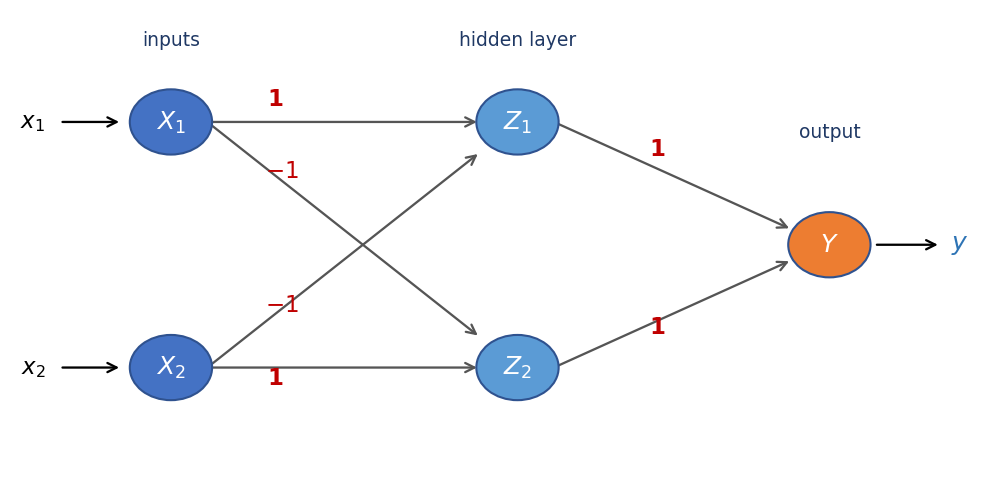

Build the XOR function by hand from threshold neurons — and see why a single neuron can't.
Module 5 · Lecture notes by Dr. Abdulkarim Albanna — a worked example
Worked Example Neural Nets ~30 minPrerequisites: Module 4 (Activation Functions). You should be comfortable with the idea of a weighted sum passing through a threshold (step) activation before starting.
Goal: implement the XOR function using McCulloch–Pitts (M–P) neurons — threshold units. In an M–P neuron there is no training, only analysis: we choose the weights by hand and verify them against the truth table.
An M–P neuron computes a weighted sum of its inputs, the net input, and fires (outputs 1) when that sum reaches a threshold \(\theta\); otherwise it outputs 0. Its threshold activation is:
\[ f(y_{\text{in}}) = \begin{cases} 1 & \text{if } y_{\text{in}} \ge \theta \\[2pt] 0 & \text{if } y_{\text{in}} < \theta \end{cases} \qquad (\theta = 1) \]
There is no learning in this exercise. We do not run gradient descent or adjust anything. Instead we choose the weights and thresholds by hand and then verify that the resulting network reproduces the desired truth table. This is how the very first neural models were designed — by construction, not by training.
XOR cannot be represented by a simple single logic function. It is written as a combination of two terms:
\[ y = x_1 \cdot \lnot x_2 \;+\; \lnot x_1 \cdot x_2 \]
The function outputs 1 when exactly one of its two inputs is 1, and 0 otherwise:
| \(x_1\) | \(x_2\) | \(\text{XOR}(x_1, x_2)\) |
|---|---|---|
| 0 | 0 | 0 |
| 0 | 1 | 1 |
| 1 | 0 | 1 |
| 1 | 1 | 0 |

A single M–P neuron draws exactly one straight decision boundary — the line where \(\text{net} = \theta\). On one side it outputs 1, on the other 0. That means a single neuron can only compute functions whose 1-outputs can be separated from the 0-outputs by a single line: it is linearly separable only. But XOR's two 1-outputs, \((0,1)\) and \((1,0)\), sit on opposite corners of the input square, with the 0-outputs on the other diagonal. No single line can put both 1s on one side and both 0s on the other. XOR therefore needs a hidden layer — an intermediate stage of neurons.
So we decompose XOR into three simpler functions, each of which is linearly separable:
\[ z_1 = x_1 \wedge \lnot x_2 \qquad z_2 = \lnot x_1 \wedge x_2 \qquad y = z_1 \vee z_2 \]
Each of the two AND-clauses is linearly separable, so each can be built with a single M–P neuron. We call these two hidden neurons \(z_1\) and \(z_2\), then combine them with an OR output neuron.
Target: \(z_1\) should fire only for \((x_1, x_2) = (1, 0)\). The net input is \(z_{1,\text{in}} = x_1 w_{11} + x_2 w_{21}\), and the neuron fires if \(z_{1,\text{in}} \ge \theta\) with \(\theta = 1\).
Attempt: initialise \(w_{11} = w_{21} = 1\).
| \(x_1\) | \(x_2\) | net input \(z_{1,\text{in}}\) | fires (\(\theta=1\))? | target \(z_1\) |
|---|---|---|---|---|
| 0 | 0 | \(0\cdot 1 + 0\cdot 1 = 0\) | 0 | 0 |
| 0 | 1 | \(0\cdot 1 + 1\cdot 1 = 1\) | 1 | 0 |
| 1 | 0 | \(1\cdot 1 + 0\cdot 1 = 1\) | 1 | 1 |
| 1 | 1 | \(1\cdot 1 + 1\cdot 1 = 2\) | 1 | 0 |
Two rows disagree with the target (rows \((0,1)\) and \((1,1)\)) — these weights fail.
Correct choice: \(w_{11} = 1,\; w_{21} = -1\), so \(z_{1,\text{in}} = x_1 - x_2\).
| \(x_1\) | \(x_2\) | net input \(z_{1,\text{in}}\) | fires (\(\theta=1\))? | target \(z_1\) |
|---|---|---|---|---|
| 0 | 0 | \(0\cdot 1 + 0\cdot(-1) = 0\) | 0 | 0 |
| 0 | 1 | \(0\cdot 1 + 1\cdot(-1) = -1\) | 0 | 0 |
| 1 | 0 | \(1\cdot 1 + 0\cdot(-1) = 1\) | 1 | 1 |
| 1 | 1 | \(1\cdot 1 + 1\cdot(-1) = 0\) | 0 | 0 |
The neuron fires only for \((1, 0)\) — exactly \(z_1\). Hence \(w_{11} = 1,\; w_{21} = -1\).
Target: \(z_2\) should fire only for \((x_1, x_2) = (0, 1)\). Trying \(w_{12} = w_{22} = 1\) fails the same way as above — those weights cannot produce \(z_2\). By symmetry we take \(w_{12} = -1,\; w_{22} = 1\), so the net input is \(z_{2,\text{in}} = x_1 w_{12} + x_2 w_{22} = -x_1 + x_2\), firing if \(z_{2,\text{in}} \ge 1\).
| \(x_1\) | \(x_2\) | net input \(z_{2,\text{in}}\) | fires (\(\theta=1\))? | target \(z_2\) |
|---|---|---|---|---|
| 0 | 0 | \(0\cdot(-1) + 0\cdot 1 = 0\) | 0 | 0 |
| 0 | 1 | \(0\cdot(-1) + 1\cdot 1 = 1\) | 1 | 1 |
| 1 | 0 | \(1\cdot(-1) + 0\cdot 1 = -1\) | 0 | 0 |
| 1 | 1 | \(1\cdot(-1) + 1\cdot 1 = 0\) | 0 | 0 |
The neuron fires only for \((0, 1)\) — exactly \(z_2\). Hence \(w_{12} = -1,\; w_{22} = 1\).

Between them, \(z_1\) and \(z_2\) fire for exactly the two rows where XOR should be 1 — and they never fire together. So an OR of \(z_1\) and \(z_2\) is precisely XOR.
Build OR with a third M–P neuron \(Y\) that receives \(z_1\) and \(z_2\) with weights \(v_1 = v_2 = 1\) and threshold \(\theta = 1\):
\[ y_{\text{in}} = z_1 v_1 + z_2 v_2 \qquad y = 1 \text{ if } y_{\text{in}} \ge 1 \]
| \(x_1\) | \(x_2\) | \(z_1\) | \(z_2\) | \(y_{\text{in}} = z_1 + z_2\) | \(y\) (\(\ge 1\)?) | XOR target |
|---|---|---|---|---|---|---|
| 0 | 0 | 0 | 0 | \(0\) | 0 | 0 ✓ |
| 0 | 1 | 0 | 1 | \(1\) | 1 | 1 ✓ |
| 1 | 0 | 1 | 0 | \(1\) | 1 | 1 ✓ |
| 1 | 1 | 0 | 0 | \(0\) | 0 | 0 ✓ |
The output column \(y\) is \((0, 1, 1, 0)\) — identical to the XOR target for every one of the four input combinations. The hand-built network computes XOR exactly.

The final network is fixed by these hand-chosen weights and thresholds:
\[ w_{11} = 1,\quad w_{21} = -1,\quad w_{12} = -1,\quad w_{22} = 1,\quad v_1 = v_2 = 1,\quad \theta = 1 \]
Key lesson: XOR needs a hidden layer — a single M–P neuron can only realize linearly separable functions. The hidden units \(z_1\) and \(z_2\) each solve a separable sub-problem, and the output combines them with an OR. This is the classic demonstration that depth buys representational power that a single neuron simply does not have.
This ties directly back to Module 3's argument for why non-linearity and depth matter: stacking layers (with a non-linear activation like the threshold between them) lets a network represent functions that no single layer ever could. XOR is the smallest, sharpest example of that principle — and historically the one that stalled the field until multi-layer networks were understood.
Work each part on paper before opening the solution. Tracing a threshold network by hand once is worth ten readings.
Trace the full network on the input \(x_1 = 0,\; x_2 = 1\). Compute \(z_{1,\text{in}}\) and \(z_1\); \(z_{2,\text{in}}\) and \(z_2\); then \(y_{\text{in}}\) and \(y\). Does the result match \(\text{XOR}(0, 1) = 1\)?
Hidden neuron \(z_1\):
\[ z_{1,\text{in}} = (0\cdot 1) + (1\cdot -1) = -1 < 1 \;\Rightarrow\; z_1 = 0 \]
Hidden neuron \(z_2\):
\[ z_{2,\text{in}} = (0\cdot -1) + (1\cdot 1) = 1 \ge 1 \;\Rightarrow\; z_2 = 1 \]
Output neuron \(Y\):
\[ y_{\text{in}} = z_1 + z_2 = 0 + 1 = 1 \ge 1 \;\Rightarrow\; y = 1 = \text{XOR}(0,1) \;\checkmark \]
The network outputs 1, which matches \(\text{XOR}(0, 1) = 1\).
Design a single M–P neuron that computes AND, and another that computes OR, of two binary inputs \(x_1, x_2\). Choose \(w_1, w_2\) and a threshold \(\theta\), and check all four input rows.
AND: weights \(w_1 = w_2 = 1\), threshold \(\theta = 2\). The net input \(x_1 + x_2\) reaches \(2\) only when both inputs are 1, so the neuron fires only for \((1, 1)\) — that is AND.
| \(x_1\) | \(x_2\) | \(\text{net} = x_1 + x_2\) | AND (\(\ge 2\)?) |
|---|---|---|---|
| 0 | 0 | \(0\) | 0 |
| 0 | 1 | \(1\) | 0 |
| 1 | 0 | \(1\) | 0 |
| 1 | 1 | \(2\) | 1 |
OR: weights \(w_1 = w_2 = 1\), threshold \(\theta = 1\). Now the net input reaches \(1\) as soon as either input is 1, so the neuron fires for every row except \((0, 0)\) — that is OR.
| \(x_1\) | \(x_2\) | \(\text{net} = x_1 + x_2\) | OR (\(\ge 1\)?) |
|---|---|---|---|
| 0 | 0 | \(0\) | 0 |
| 0 | 1 | \(1\) | 1 |
| 1 | 0 | \(1\) | 1 |
| 1 | 1 | \(2\) | 1 |
Both AND and OR are linearly separable, so each needs only a single neuron — the difference is entirely in the threshold.
Explain, in one sentence, why no single M–P neuron can compute XOR — and what fixes it.
A single M–P neuron implements exactly one linear threshold boundary (the line \(\text{net} = \theta\)): one side outputs 1, the other 0. XOR is not linearly separable — no single weighted-sum threshold can separate \(\{(0,1), (1,0)\}\) from \(\{(0,0), (1,1)\}\), since its two 1-points sit on opposite corners of the input square. Therefore no single neuron can compute XOR. The fix is to add an intermediate (hidden) layer: the two hidden neurons \(z_1\) and \(z_2\) each carve one linear region, and the OR output neuron combines them into the non-linear XOR pattern.
We built XOR by hand, choosing every weight and threshold ourselves. But for real problems we cannot design weights by inspection — the network must learn them from data. Next up: Module 6 — Backpropagation, the algorithm that trains multi-layer networks by propagating error gradients backward through the layers.